1. 孤立牌は、周りの形と打点込みで比べる
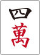 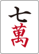 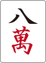 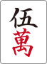 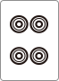 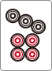 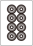
9/27 ねじまき鳥先生
      

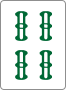 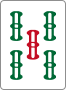 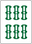 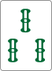 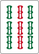

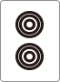 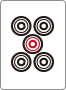 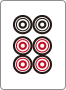 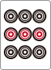 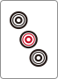
てんてん先生の定番フレーズ：
「1種受けの為だけの危険牌＜安牌」

画像は3面子・2ターツで雀頭がない、連続形を含むヘッドレス2型。との2通りの分解を重ねると、ピンズはからまでが受け入れになる。マンズ 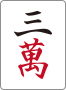 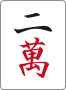

東1局2本場は、 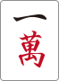

東4局は役ありカンで、が2枚見えている超愚形。講師はダマを推奨し、その後に他家からリーチが入っても「押したら聴牌がばれるからリーチ」とはしない。ダマの押しだけで聴牌・打点は確定せず、他家がリーチ者の現物を切って和了できる余地が残る。
覚えておきたいフレーズ：
「役アリ愚形を黙っていた所に立直が来たら、猶の事ダマである。」

東4局2本場は 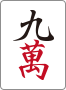

資料の副露対応は、相手が親・相手の打点が高い・待ちが絞れている・自分の手牌価値が低い、の4観点で確認する。該当2つ以上なら要対応であり、常に無条件のベタオリという意味ではない。今回の二向聴では、1人でも対応を迷う相手が2人いるため、危険牌を押し続けるよりオリ寄りに判断した。
71:30の場面をYouTubeで見る